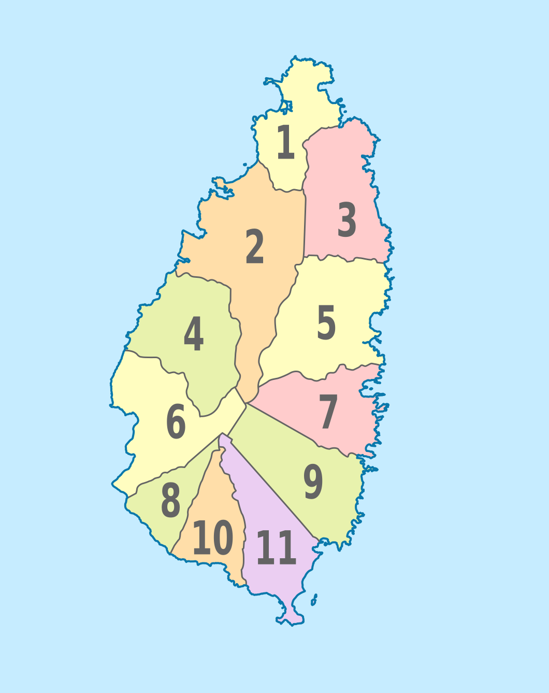

Cografya ve Iklim
▼

Saint Lucia, dogu Karayip Denizi'nde, K���k Antiller'in bir par�asi olan volkanik bir adadir. Kuzeyde Martinique ve g�neyde Saint Vincent arasinda yer alir; dogusunda Atlantik Okyanusu, batisinda Karayip Denizi bulunur.
| Toplam Alan | 617 km² (238 sq mi) |
| Uzunluk | Kuzeyden g�neye 43 km (27 mi) |
| Genislik | En genis noktada 23 km (14 mi) |
| En Y�ksek Nokta | Mount Gimie, 950m (3.117 ft) |
| Simge Yapilar | The Pitons (Gros Piton 770m, Petit Piton 743m) - UNESCO D�nya Mirasi Alani |
| Kiyi Seridi | 158 km |
| Koordinatlar | 13,9094° K, 60,9789° B |
Iklim
Iki ana mevsimli tropikal deniz iklimi:
- Kurak mevsim (Ocak-Haziran): Ort. sicaklik 24-31°C (75-88°F), d�s�k nem
- Yagisli/Kasirga mevsimi (Temmuz-Aralik): Ort. sicaklik 25-32°C (77-90°F), y�ksek yagis
- Yillik ortalama yagis: 1.300mm (kiyi) ile 3.400mm (i� kesim daglari) arasi
- Kasirga mevsimi Agustos-Ekim arasi zirve yapar
H�k�met ve Y�netim
▼Saint Lucia, Ingiliz Milletler Toplulugu b�nyesinde parlamenter demokrasi ve anayasal monarsi ile y�netilmektedir. Ingiliz h�k�mdari (Genel Vali tarafindan temsil edilen) devlet baskanidir.
Yapi
| Devlet Baskani | Ingiliz H�k�mdari, Genel Vali tarafindan temsil edilir |
| H�k�met Baskani | Basbakan (�ogunluk partisi lideri) |
| Yasama Organi | �ift meclisli Parlamento: Senato (11 �ye, atanmis) ve Temsilciler Meclisi (17 se�ilmis) |
| Yargi | Dogu Karayip Y�ksek Mahkemesi (OECS devletleriyle paylasimli), son temyiz merci Temmuz 2023'ten itibaren Caribbean Court of Justice (CCJ) |
| Hukuk Sistemi | Ingiliz �rf ve adet hukuku (common law) |
| Se�imler | Her 5 yilda bir genel se�im yapilir |
Is D�nyasi I�in �nemli Bakanliklar
- Maliye, Ekonomik Kalkinma ve Gen�lik Ekonomisi Bakanligi - Mali politika, vergi, b�t�e
- Ticaret, Imalat, Is Gelistirme, Kooperatifler ve T�ketici Isleri Bakanligi - Is d�zenlemesi, ticaret
- Turizm, Yatirim, Yaratici End�striler, K�lt�r ve Enformasyon Bakanligi - Turizm, yatirim tesviki
- Tarim, Balik�ilik, Gida G�venligi ve Kirsal Kalkinma Bakanligi - Tarim politikasi
- Altyapi, Limanlar, Ulasim, Fiziksel Kalkinma ve Kentsel Yenileme Bakanligi - Altyapi, planlama
- Bassavcilik - Sirketler sicili, hukuki isler
Idari B�lgeler
St. Lucia, Fransiz s�m�rge d�neminden kalan 10 b�lgeye (tarihsel olarak "quarter" olarak adlandirilir) ayrilmistir:
Castries
Baskent, ana ticaret merkezi, birincil liman
Gros Islet
Turizm merkezi, Rodney Bay, b�y�k oteller
Vieux Fort
Hewanorra Uluslararasi Havalimani, g�ney is b�lgesi
Soufriere
The Pitons, k�k�rt kaynaklari, eko-turizm
Dennery
Dogu kiyisi, balik�ilik, tarim
Micoud
Dogu b�lgesi, �ift�i topluluklari
Choiseul
G�ney b�lgesi, el sanatlari mirasi
Laborie
G�ney balik�i k�y�, otantik k�lt�r
Anse la Raye
Bati kiyisi, balik�ilik, Cuma balik senligi
Canaries
En k���k b�lge, Anse la Raye ile Soufriere arasinda

Ekonomi
▼
| GSYIH (2024) | EC$6.951M / USD $2,57 milyar (IMF 2025 Madde IV) |
| Kisi Basina GSYIH (2024) | ~USD $14.323 |
| GSYIH B�y�mesi (2024) | %4,7 (IMF tah.) |
| GSYIH B�y�me Tahmini (2025) | %1,7 (IMF proj.) — turizm zayifligindan kaynaklanan sert yavaslama, insaat ile dengeleniyor |
| GSYIH B�y�me Tahmini (2026) | %2,3 toparlanma bekleniyor; orta vadede %1,5 potansiyele yakinsama |
| Enflasyon (2025 proj.) | %0,8 |
| Kamu Borcu | GSYIH'nin ~%77'sinde dengeleniyor; 2024 yilina kadar art arda 3 yil birincil fazla |
| Kredi B�y�mesi (2024) | %5,6 (15 yilin en y�ksegi); 2025'te %4,2 / 2026'da %3,1'e gerileme bekleniyor |
| Para Birimi | Dogu Karayip Dolari (XCD), sabit kur: XCD 2,70 = USD 1,00 |
| Baslica Ihracat Ortaklari | ABD, Ingiltere, Trinidad & Tobago, Barbados, Dominica |
| Baslica Ithalat Ortaklari | ABD, Trinidad & Tobago, Ingiltere, Japonya |
Ekonomik Yapi
- Hizmetler/Turizm: GSYIH'nin ~%65'i. 2024'te 1,15 milyonun �zerinde ziyaret�i (rekor). Baslica d�viz kaynagi ve istihdam saglayici.
- Tarim: GSYIH'nin ~%3'�, ancak istihdamin %20'si. Baslica �r�nler: muz, kakao, hindistancevizi, mango, avokado.
- Imalat: Gida isleme, i�ecek, elektronik montaj ve giyim dahil hafif imalat.
- Finansal Hizmetler: B�y�yen offshore bankacilik ve uluslararasi is sirketi sekt�r�.
- Insaat: Turizm altyapisi ve devlet projeleri tarafindan y�nlendirilen �nemli sekt�r.
Temel Ekonomik Zorluklar
Kasirga ve iklim olaylarina karsi kirilganlik. Turizme asiri bagimlilik. Y�ksek kamu borcu. Sinirli dogal kaynaklar. K���k i� pazar. Y�ksek enerji maliyetleri (ithal petrole dayali). Gen� issizligi.
Son Ekonomik Performans
▼Saint Lucia, pandemi sonrasi g��l� bir toparlanma g�stermis; reel GSYIH 2022'de %20,6 artis kaydetmis, ardindan sonraki yillarda daha istikrarli bir b�y�meye ge�is yapmistir. IMF'nin 2025 Madde IV kons�ltasyonu, ekonominin 2024'te g��l� ABD turizm varislari ve aktif insaat faaliyetleriyle %4,7 b�y�d�g�n� teyit etmektedir. Ingiltere ve Kanada'dan gelen turizmde zayiflama nedeniyle (konaklama varislari Ocak-Eyl�l 2025'te yillik bazda %3,2 d�st�) b�y�menin 2025'te %1,7'ye yavaslamasi, turizmin canlanmasi ve altyapi projelerinin ilerlemesiyle 2026'da %2,3'e y�kselmesi beklenmektedir. Mali performans, art arda �� yil birincil fazla ile g��lenmis ve h�k�met 2025/26 mali yili i�in simdiye kadarki en b�y�k b�t�e olan EC$2,06 milyari a�iklamistir.
Temel Ekonomik G�stergeler
| G�sterge | 2022 | 2023 | 2024 | 2025 (proj.) | 2026 (proj.) |
|---|---|---|---|---|---|
| Reel GSYIH B�y�mesi | %20,6 | %3,3 | %4,7 | %1,7 | %2,3 |
| Enflasyon (T�FE) | %6,4 | %4,5 | -%0,5 | %0,8 | %1,5–2,0 |
| Issizlik Orani | %16,5 | %14,0 | %10,8 | %13,4 (�2) | — |
| Kamu Borcu (GSYIH %) | ~%83 | ~%79 | %76,7 | %77,2 | ~%77 |
| Cari Islemler Dengesi (GSYIH %) | — | — | -%2,5 | -%3,6 | — |
| DYY (GSYIH %) | — | — | %7,3 | %7,0 | — |
Kaynaklar: IMF 2025 Madde IV Kons�ltasyonu (Ocak 2026'da sonu�landi, basin a�iklamasi PR/26/03), D�nya Bankasi, ECCB. Projeksiyonlar IMF personel tahminleridir. Nominal GSYIH 2024: EC$6.951M (US$2.574M); kisi basina US$14.323.
Kredi Notu
CariCRIS (Caribbean Information and Credit Rating Services), Saint Lucia'yi b�lgesel �l�eginde CariBBB- olarak derecelendirmekte olup, g�r�n�m istikrarlidir. Bu yeterli kredi degerliligi notu, �lkenin orta d�zey bor� y�k�n� ve dis soklara karsi kirilganligini yansitmaktadir. Potansiyel not artisi i�in temel fakt�rler arasinda bor�/GSYIH oraninin %65'in altina d�s�r�lmesi ve yillik %3 veya �zeri GSYIH b�y�mesinin s�rd�r�lmesi yer almaktadir.
Mali Politika Gelismeleri
- Birincil fazla serisi: 2024 yilina kadar art arda �� yil birincil fazla (2024'te GSYIH'nin %1,5'i), gelisen mali disiplinin g�stergesi.
- Rekor b�t�e: 2025/26 b�t�esi toplam EC$2,06 milyar olup, EC$325,6 milyon sermaye harcamasi i�ermekte ve bunun EC$122,8 milyonu altyapi i�in ayrilmistir.
- Ulusal Varlik Fonu: Subat 2025'te Bakanlar Kurulu, CBI gelirleriyle finanse edilen Saint Lucia Ulusal Varlik Fonu'nun kurulmasini resmen onaylamistir. Hedefler: nesiller arasi servet koruma, iklim adaptasyonu ve s�rd�r�lebilir ekonomik kalkinma. Fon, ESG yatirim ilkelerini takip edecek ve bagimsiz bir kurul tarafindan y�netilecektir. Mevzuatin 2025 1. �eyrekte parlamento onayina sunulmasi hedeflenmistir.
- Bor� hedefi zorlugu: Mevcut politikalar altinda, kamu borcunun (~GSYIH'nin %77'si) sabitlenmesi �ng�r�lmekte ancak ECCU b�lgesel hedefi olan 2035'e kadar GSYIH'nin %60'inin altina d�smesi m�mk�n g�r�lmemektedir. IMF, kapsamli vergi reformu, harcama kontrolleri ve mali sorumluluk �er�evesi �nermektedir.
B�y�k Altyapi ve Yatirim Projeleri
| Proje | Deger | Durum / Zaman �izelgesi |
|---|---|---|
| Hewanorra Uluslararasi Havalimani Yenileme | USD $157 milyon | ATC kulesi insaat halinde. Ihale Ekim 2025’te kapandi; ana terminal insaati 2026 1. �eyrek, tamamlanma ~2029. Yeni terminal (1,2 milyon yolcu kapasitesi), paralel taksi yolu, 5 jet k�pr�s�. A380 sinifi u�aklari karsilayacak sekilde tasarlandi. |
| St. Jude Hastanesi Yeniden Insasi | USD $75 milyon (Suudi Kalkinma Fonu kredisi) | 16 yil sonra Kasim 2025’te tamamlanarak h�k�mete teslim edildi. Genisletilmis acil servis, BT taramasi, molek�ler laboratuvar ve kan bankasi i�eriyor. |
| Millennium Otoyolu ve Bati Kiyisi Yolu | Toplam US$43,3 milyon (UKCIF + CDB) | Lot 1: %96 tamamlandi. Lot 2B: %53 tamamlandi. Lot 2A: 2026 1. �eyrekte tamamlanma. Castries ile Vieux Fort arasinda her hava kosulunda erisimi iyilestiren 40 km rehabilitasyon. |
| Secrets St. Lucia Resort & Spa | — | Choc Beach’te 355 odali yalnizca yetiskinlere �zel her sey dahil resort (Hyatt Inclusive Collection). Haziran 2025’te a�ildi. Eski St. James Club Morgan Bay alani. |
| Courtyard Marriott, Pointe Seraphine | — | Castries kruvaziyer limani yakininda 140 odali otel; insaat halinde, 2026 bekleniyor. |
| Cabot Saint Lucia | — | Cap Estate’te 375 d�n�ml�k l�ks golf & konut toplulugu. Point Hardy Golf Club Aralik 2023’ten beri a�ik (d�nya siralamasi #76). 320 konut planlandi; Horizon Villas ($5,6M+) 2025–26’da tamamlaniyor. 40 s�itlik butik otel. |
| Sapphire Sands Villas | — | Reduit Beach’te (Bay Gardens) l�ks villa tesisi; spa, butler hizmeti ile 27 �nite. Subat 2026’da a�ilis. |
| Canelles Micoud L�ks Oteller | — | 250 oda ve 380 konuttan olusan iki her sey dahil otel; insaat devam ediyor. |
| Choc K�pr�s� Insaati | EC$8,2 milyon | 2025/26 MY b�t�esinde tahsis edildi. |
| Gros Islet Otoyolu Iyilestirmesi | — | 2026 1. �eyrekte bekleniyor. Turizm yogun kuzey seridine hizmet veren ana Castries–Gros Islet koridorunda iyilestirmeler. |
| D�nya Bankasi Sel Dayanikliligi Projesi | USD $25 milyon | Ekim 2025’te onaylandi; Castries ve Anse La Raye nehir havzalarini hedefliyor, ~67.000 sakine fayda sagliyor. |
DYY ve Yatirim Ortami
Nominal GSYIH 2024’te EC$6.951M (US$2.574M) seviyesine ulasmis olup, kisi basina GSYIH US$14.323’t�r. Dogrudan yabanci yatirim 2024’te GSYIH’nin yaklasik %7,3’�ne ulasmis olup, agirlikli olarak turizm altyapisi, gayrimenkul ve Yatirim Yoluyla Vatandaslik (CBI) programina y�nlendirilmistir. DYY, otel insaati ve CBI baglantili projeler sayesinde 2023’te %320 artarak (~USD $140 milyon) si�rama g�stermistir. H�k�metin Invest Saint Lucia ajansi, turizm, altyapi, BIT ve yenilenebilir enerji alanlarinda DYY’yi aktif olarak hedeflemektedir. �zel sekt�r kredi b�y�mesi 2024’te reel bazda %5,6’ya ulasmistir — ticari gayrimenkul kredileri (2025 1. �eyrekte toplam kredilerin %7,4’�) tarafindan y�nlendirilen on bes yilin en y�ksek orani. ECCB, 2024 sonu itibariyla Saint Lucia’nin ticari bankacilik sekt�r�n� istikrarli olarak degerlendirmis, toplam banka varliklari USD $3,46 milyara ulasmistir. Dis bor� 2024’te GSYIH’nin %68,7’si seviyesindedir.
Ekonomik G�r�n�m �zeti
IMF, mevcut altyapi ve otel yatirim d�ng�leri tamamlandik�a orta vadeli b�y�menin %1,5–1,8'e yerlesmesini �ng�rmektedir. Riskler, jeopolitik gerilimler, ticaret belirsizligi, turizm talebinin potansiyel zayiflamasi ve s�regelen dogal afet maruziyeti dahil olmak �zere asagi y�nl�d�r. Yukari y�nde ise havalimani yenileme ve yeni otel kapasitesinin tamamlanmasi, turizm gelirlerini ve istihdami mevcut projeksiyonlarin �tesinde �nemli �l��de artirabilir.
Diaspora & Havaleler
▼
Tahminen 71.200 Saint Luciali yurt disinda yasamakta olup, bu sayi yerlesik nüfusun %38,8'ini temsil etmektedir (2020 verileri). 1965 öncesi göçmenler Birlesik Krallik'i tercih etmis; o tarihten bu yana %70'ten fazlasi ABD'yi seçmistir. Diaspora, önemli havale akislari ve konut ile küçük isletmelere geri dönüs göçü yatirimi saglamaktadir.
Diaspora Dagilimi
| Konum | Nüfus | Temel Topluluklar |
|---|---|---|
| Amerika Birlesik Devletleri | 25.244 | Brooklyn, Bronx, Güney Florida |
| Birlesik Krallik | 12.308 dogumlu + 30.000+ miras | Londra, genis Birlesik Krallik |
| Kanada | Birkaç bin | Öncelikle egitim/istihdam |
Havale Akislari
| Havaleler (2024) | US$64,96 milyon (~GSYIH'nin %2,5'i) |
| Havaleler (2023) | US$63,29 milyon |
| Büyüme | Yillik bazda ~%2,6 |
| Karayip ortalamasi | ~GSYIH'nin %7'si (SLU ortalamanin oldukça altinda) |
| Kanallar | Western Union, MoneyGram (10'dan fazla Massy Finance lokasyonu), banka transferleri |
| Küresel ort. gönderim maliyeti | %6,4 (BM hedefi: %3) |
Kaynak: Dünya Bankasi Havale Verileri, SLU Büyükelçiligi.
Temel Diaspora Politikalari & Programlari
- 2024 Vatandaslik Degisikligi (dönüm noktasi): Parlamento, yurt disinda dogan 2. ve 3. nesil Saint Lucia torunlarina vatandaslik verdi. SLU vatandaslarinin çocuklari ve torunlari artik dogum hakki vatandasligini devralabilir.
- LucianLinks Diaspora Programi: SLU dogumlu vatandaslar ve ana/babalari veya büyük ana/babalari SLU'da dogan kisiler için ücretsiz üyelik. Konaklamada %60'a kadar indirim ve gezilerde indirimler sunar.
- Planlanan Diaspora Yasa Tasarisi (Eylül 2024): 10+ yildir yurt disinda yasayan SLU vatandaslari dönüste esyalarini gümrüksüz getirebilir.
- Diaspora Isleri Birimi: Dis Isleri Bakanligi bünyesinde diaspora katilimini koordine etmek üzere faaliyet göstermektedir.
- USLOA (Union of SLU Overseas Associations, kur. 1988): Güney Florida, Orta Florida, Houston, Georgia, DC ve Birlesik Krallik'taki üye derneklerle çati kurulusu.
Geri Dönüs Göçü & Yatirim
Diaspora geri dönüs göçü, 1990'lardan bu yana ada genelinde bir konut patlamisini besledi. Geri dönenler öncelikli olarak konut ve küçük isletmelere yatirim yapmakta olup, tarimdan insaat ve hizmetlere dogru bir isgücü kaymasina katkida bulunmustur. Ulusal Varlik Fonu (Subat 2025'te onaylandi), CBI gelirlerini sürdürülebilir kalkinmaya yönlendirmek için yeni bir mekanizmayi temsil etmekte olup, potansiyel olarak diaspora katilimcilari için yeni yatirim firsatlari yaratabilir.
Demografi
▼
| N�fus (2022 Sayimi) | 172.948 kisi (2010’daki 166.526’dan artis, +%3,9) |
| N�fus (2025 tah.) | ~184.000 |
| N�fus Yogunlugu | 721 kisi/sq mi (280/km²) |
| Medyan Yas | 35,7 yil |
| Ortalama Hane B�y�kl�g� | 2,6 kisi |
| Toplam Dogurganlik Orani | 1,4 (yenileme seviyesi 2,1’in altinda) |
| Resmi Dil | Ingilizce |
| Kreol Dili | Saint Lucia Kreol Fransizcasi (Kweyol) — yaygin olarak konusulur |
| Okuryazarlik Orani | ~%91 |
| Din | Agirlikli olarak Hristiyan (Roma Katolik ~%60, Protestan ~%25) |
| Kentlesme | ~%19 kentsel (Castries metropol alani) |
| Yasam Beklentisi | ~76 yil |
| Is G�c� | ~90.000 |
2022 Sayimi: B�lge N�fus Egilimleri
Castries en kalabalik b�lge olmaya devam ediyor ancak ulusal n�fustaki payinda d�s�s egilimi g�zlemleniyor. En hizli b�y�yen b�lgeler Gros Islet (turizm gelisimi ve yeni konut insaati), Vieux Fort (havalimani yakinligi ve end�striyel faaliyet), Laborie ve Choiseul’dur. D�s�k toplam dogurganlik orani (1,4) ve yaslanan n�fus (medyan yas 35,7), St. Lucia’nin �n�m�zdeki on yillarda is g�c�n� giderek daha fazla kisitlayacak bir demografik d�n�s�me girdigini g�stermektedir.
Altyapi
▼
Havalimanlari

| Havalimani | Kod | Konum | Pist | Islev |
|---|---|---|---|---|
| Hewanorra International | UVF | Vieux Fort (Castries'e 54 km, ~1 saat s�r�s) | 2.744m × 45m | Ana uluslararasi — ABD, Ingiltere, Kanada, Avrupa |
| George F.L. Charles | SLU | Vigie, Castries (sehir merkezine 2 km) | 1.898m × 45m | B�lgesel/adalar arasi (yalnizca turboprop) |
UVF hizmet veren havayollari (2026): American Airlines (Miami, Charlotte, Philadelphia, JFK), JetBlue (JFK, Boston), Delta (Atlanta), United (Chicago ORD, Newark), British Airways (London Gatwick — tek aktarmasiz Avrupa seferi), Air Canada (Toronto), Caribbean Airlines. 16 havalimanindan 9 havayolu. Not: Virgin Atlantic ve TUI, 2025'te dogrudan Londra seferlerini durdurdu.
SLU hizmet veren havayollari: Caribbean Airlines, interCaribbean Airways, LIAT 2020, Sunrise Airways, Winair. Barbados, Dominica, Martinique, Guadeloupe, Antigua, St. Vincent, Trinidad baglantilari.
US$157M Hewanorra Yenileme Projesi
Yeni terminal (337.000+ ft²), 5 jet k�pr�s�, yillik 1,2 milyon yolcu kapasitesi, A380 sinifi u�aklari karsilayacak sekilde tasarlandi. Yeni ATC kulesi su anda insaat halindedir. Ana terminal i�in y�klenici ihalesi Ekim 2025’te kapandi; terminal insaati 2026 1. �eyrekte bekleniyor, genel tamamlanma hedefi ~2029.
Deniz Limanlari

T�m limanlar Saint Lucia Hava ve Deniz Limanlari Otoritesi (SLASPA) tarafindan y�netilmektedir.
| Liman | Islev | Temel Bilgiler |
|---|---|---|
| Port Castries | Kruvaziyer ve �ok ama�li | Yillik 600.000'den fazla kruvaziyer yolcusu. 6 kargo rihtimi (18–36 ft derinlik). Yillik ~5.000–6.000 TEU konteyner ge�isi. Kruvaziyer rihtimlari: Pointe Seraphine PS#1 (400 ft) ve PS#2 (300 ft); ayni anda iki mega gemiye kadar. 30 yillik GPH imtiyazi (Agustos 2023'te imzalandi, Mayis 2024'ten itibaren faaliyette); US$135 milyon liman iyilestirme yatirimi. B�y�k yenileme devam ediyor: yikim Ocak 2025’te basladi; insaat Nisan 2025’te basladi. Pointe Seraphine Rihtim 1 Oasis sinifi gemiler i�in y�kseltildi (gemi basina 6.500 yolcu); Pointe Seraphine ile Castries'i birlestiren yeni y�r�y�s yolu; Banannes Bay'de Balik�i K�y�; yeni satici pasaji. Hedef tamamlanma: Ekim 2026. |
| Port of Vieux Fort | Kargo ve konteyner | �zel kargo limani. Finger Pier (Rihtim #1): 500 ft × 50 ft, 35 ft derinlik. Konteyner Rihtimi (#2): 690 ft, 35 ft derinlik. Ekipman: Liebherr mobil liman vinci (104 ton kapasiteli), reach stacker'lar, 60'tan fazla sogutmali priz noktasi. Aktarma i�in Hewanorra Havalimani yakininda. |
| Cul de Sac Terminali | Petrol | Buckeye St Lucia Terminal Ltd tarafindan isletiliyor. Yillik ~6,82M ton ge�is, yillik ~120 gemi �agrisi. Ham petrol, LPG, mamul �r�nler. |
Port Castries — Kargo Rihtim Bilgileri
| Rihtim | Uzunluk | Derinlik |
|---|---|---|
| Rihtim #1 | 200 ft (61 m) | 18–20 ft |
| Rihtim #2 ve #3 (s�rekli) | 720 ft (220 m) | 27 ft |
| Rihtim #4 | 498 ft (152 m) | 32 ft |
| Rihtim #5 | 520 ft (159 m) | 32 ft |
| Rihtim #6 | 448 ft (137 m) | 30 ft |
Konteyner operasyonlari: ~400 TEU zemin slot kapasitesi, mobil vin�ler, reach stacker'lar ve forkliftlerle yari otomatik. Rodney Bay Marina (kuzey), Soufriere ve Marigot'da yat tesisleri mevcuttur.
Nakliye Hatlari ve Transit S�releri
Saint Lucia'ya hizmet veren baslica nakliye hatlari: CMA CGM, Tropical Shipping (Miami/Jacksonville'den haftalik), Geest Line (Ingiltere–Karayip �r�n ticareti), Maersk ve MSC. Kargonun �ogu Kingston (Jamaika), Freeport (Bahamalar) veya Point Lisas (Trinidad) aktarma limanlari �zerinden tasinir.
| �ikis Noktasi | Transit S�resi | Notlar |
|---|---|---|
| ABD Dogu Kiyisi (Miami/Jacksonville) | 8–12 g�n | Tropical Shipping haftalik dogrudan sefer sunuyor |
| Birlesik Krallik | ~12 g�n | Geest Line dogrudan; digerleri aktarmali |
| Avrupa (Kita Avrupasi) | 15–25 g�n | Aktarma limani �zerinden (genellikle Kingston veya Freeport) |
| Trinidad & Tobago | 1–2 g�n | B�lgesel besleyici seferler; sik sefer |
Telekom�nikasyon ve Dijital Altyapi
Saint Lucia, ECTEL (Dogu Karayip Telekom�nikasyon Otoritesi, kur. 2000) ve yerel NTRC (Ulusal Telekom�nikasyon D�zenleme Komisyonu) tarafindan d�zenlenen liberallestirilmis bir d�opol telekom�nikasyon pazarina sahiptir. Hem Flow hem de Digicel sabit genis bant ve mobil hizmetler sunmakta olup, Starlink 2024 sonundan itibaren uydu baglantisi saglamaktadir. Internet penetrasyonu n�fusun %70,1’i (126.000 kullanici, Ekim 2025), mobil baglantilar ise %113't�r (~204.000 SIM). Ada, �ift denizalti kablo yedekliligi, yerel internet degisim noktasi ve devlet tarafindan finanse edilen halka a�ik WiFi programindan yararlanmaktadir. Dijital D�n�s�m artik Bakan Casimir y�netiminde resmi bir bakanlik portf�y�d�r; h�k�metin dijital ekonomiye verdigi �nceligi g�stermektedir.
Dijital Baglanti Metrikleri
| Internet Penetrasyonu | N�fusun ~%70,1'i (126.000 kullanici, Ekim 2025) |
| Mobil Baglantilar | ~204.000 (n�fusun %113'�); %98'i genis bant (3G/4G) |
| Sabit Genis Bant Aboneleri | ~33.000 |
| Medyan Sabit Indirme Hizi | ~75 Mbps (2025 basi) |
| Mobil Veri Hizlari | ~20–30 Mbps (4G LTE, kentsel alanlar) |
| Sosyal Medya Kullanicilari | 93.700 (n�fusun %52'si) |
| Internet Society �st Akis �esitliligi | “Iyi” olarak derecelendirildi (2+ ayri uluslararasi baglanti) |
Kaynaklar: DataReportal Digital 2026, Ookla, Internet Society. Saint Lucia’nin internet penetrasyonu (%70,1), Amerika kitasi b�lgesel ortalamasi olan ~%85’in gerisinde kalmakta olup, kentsel-kirsal baglanti farkini yansitmaktadir.
Denizalti Kablo Sistemleri
Saint Lucia, her ikisi de Castries’de karaya �ikan iki denizalti fiber optik kablo sistemi araciligiyla k�resel internet omurgasina baglidir. Bu �ift kablo yedekliligi dayaniklilik ve yeterli uluslararasi bant genisligi kapasitesi saglamaktadir.
| Kablo Sistemi | Uzunluk | Kapasite | Isletmeci / Konsorsiyum | �ikis Noktasi | Hizmete Giris |
|---|---|---|---|---|---|
| ECFS (Eastern Caribbean Fiber System) | 1.730 km | 2 fiber �ift; 2,5 Gbps+'a y�kseltildi | Konsorsiyum: C&W Networks (Flow), AT&T, BT, Orange, Sprint, Verizon, GT&T, Codetel | Castries | 1995 |
| SCF (Southern Caribbean Fiber) | 3.000 km | 2 fiber �ift; ekspres dal Barbados–St Lucia–St Croix (~900 km) | Digicel Group (%100 istiraki) | Castries | 2006 |
ECFS, 14 Karayip adasini birbirine baglar ve transatlantik kablolar araciligiyla k�resel omurgaya ulasir. SCF, dogu Karayipler genelinde 16 �ikis noktasiyla 15 adayi birbirine baglar. Americas-II ve GlobeNet’in Saint Lucia’da �ikis noktasi yoktur — uluslararasi trafik ECFS/SCF �zerinden ABD Virgin Adalari, Trinidad veya Barbados’taki merkez noktalara y�nlendirilir.
Saint Lucia Internet Degisim Noktasi (SLiX)
Subat 2014’te D�nya Bankasi tarafindan finanse edilen CARCIP programi kapsaminda, Packet Clearing House (PCH) destegiyle baslatilmistir. Hem Flow hem de Digicel SLiX’te esleme yapmakta olup, yerel trafigin pahali uluslararasi baglantilar �zerinden y�nlendirilmek yerine ada i�inde kalmasini saglar. Pop�ler web sitesi i�eriginin yaklasik %26’si degisim noktasi araciligiyla �lke i�i �nbelleklerden sunulmaktadir. SLiX gecikmeyi azaltir, transit maliyetlerini d�s�r�r ve yerel internet hizmetlerinin dayanikliligini artirir.
ISS Karsilastirmasi: Konut Genis Bant Planlari
| Saglayici | Teknoloji | Plan | Indirme | Y�kleme | Fiyat (EC$/ay) | Notlar |
|---|---|---|---|---|---|---|
| Flow (Liberty Latin America) |
HFC / FTTH | Internet Essential | 300 Mbps | 40 Mbps | ~EC$115 | Mayis 2025’ten itibaren +%2,5 artis (~EC$3/ay). TV ve sabit hat ile paket indirimleri mevcut. ~1/3 pazar payi. |
| Internet Plus | 400 Mbps | 40 Mbps | ~EC$118 | |||
| Internet Max | 500 Mbps | 40 Mbps | ~EC$145 | |||
| Digicel+ (Digicel Group) |
FTTH | Home Fibre 200 | 200 Mbps | 20 Mbps | ~EC$136 | FTTH; Gros Islet, Castries, Soufriere ve Vieux Fort’ta mevcut. Fiber planlarda Disney+ dahil. ~2/3 mobil pazar payi. 58 baz istasyonu (700 MHz). |
| Home Fibre 350 | 350 Mbps | 35 Mbps | ~EC$174 | |||
| Home Fibre 500 / 1000 | 500 Mbps–1 Gbps | 50 Mbps | EC$209+ | |||
| Starlink (SpaceX) |
LEO Uydu | Standard Residential | 50–150 Mbps | 20–40 Mbps | ~EC$216 (~US$80) | Ekipman ~US$350–600 tek seferlik. 20–40 ms gecikme. 2024 sonundan itibaren ada genelinde mevcut. Sinirsiz veri. Kendi kendine kurulum kiti. |
Fiyatlar yaklasiktir ve degisiklige tabidir. Hem Flow hem de Digicel, genis bandi TV ve/veya sabit hat hizmetleriyle birlestirme durumunda paket indirimleri sunmaktadir. Digicel ayrica uzak/yedek baglanti i�in BusinessCom Networks ortakligiyla VSAT uydu hizmetleri saglamaktadir.
Kurumsal Internet Fiyatlandirmasi
| Saglayici | Plan | Hiz | Aylik �cret |
|---|---|---|---|
| Flow | Business Starter | 50 Mbps | ~EC$150 |
| Flow | Business Pro | 200 Mbps | ~EC$250 |
| Flow | Business Enterprise | 500 Mbps–1 Gbps | EC$350+ |
| Digicel | Digicel+ Business | 100 Mbps–1 Gbps | EC$100–300 |
| Starlink | Standard (uydu) | 50–150 Mbps | ~US$80/ay + US$350–600 ekipman |
SLA’li, statik IP’li ve garantili bant genislikli �zel kurumsal hatlar, hem Flow hem de Digicel’den �zel fiyatlandirma ile sunulmaktadir.
Mobil Ag Kapsama Alani
4G LTE Kapsama Alani ve 5G Durumu
| 4G LTE Kapsama Alani | N�fusun ~%95–96’si (her iki operat�r birlikte) |
| Flow LTE Baslangici | 2017 (ilk olarak Castries, Hewanorra Havalimani, Soufriere) |
| Digicel LTE Baslangici | 2018 (ada geneli yayginlastirma tamamlandi; 58 baz istasyonu, 700 MHz bandi) |
| Mobil Pazar Payi | Digicel ~%66; Flow ~%34 |
| 5G Durumu | Hen�z mevcut degil. Planlanan spektrum ihalesi yok. ECTEL, 2025’te Yer Disi Ag (Starlink i�in) lisanslama konusunda danisma yayinladi, ancak 5G i�in zaman �izelgesi a�iklanmadi. |
| Toplam Mobil Baglantilar | ~204.000 (n�fusun %113’�) |
| SIM Kartlar | Her iki saglayicidan ~EC$15. �n �demeli y�klemeler EC$5–200 arasi ada genelinde mevcuttur. |
Mobil Veri Planlari (�n �demeli)
| Saglayici | Plan | Veri | Arama/SMS | Fiyat (EC$) | Ge�erlilik |
|---|---|---|---|---|---|
| Flow | Always On 7-Day | 5 GB | Dahil | EC$28 | 7 g�n |
| Flow | Always On 30-Day | 12 GB | 1.000 dk + SMS | EC$100 | 30 g�n |
| Digicel | Prime Bundle 7-Day | 10 GB | Dahil | EC$32 | 7 g�n |
| Digicel | Prime More 30-Day | 40 GB | Dahil | EC$149 | 30 g�n |
| Digicel | Prime Extra 30-Day | 60 GB | Dahil | EC$255,50 | 30 g�n |
| Digicel | Prime Max 30-Day | 100 GB | Dahil | EC$337,50 | 30 g�n |
Planlar sinirsiz WhatsApp ve sosyal medya uygulamalarini i�erir. Digicel Prime paketleri, TikTok, YouTube vb. i�in ayri “Sosyal Veri” haklari sunar (�st paketlerde uygulama basina 45 GB’a kadar). Digicel, “Roam Like You’re Home” hizmetini EC$18/7 g�n (ABD, Kanada, Karayipler) olarak sunmaktadir. Paket disi varsayilan �cretler: Digicel EC$0,40/MB; Flow EC$1,00/MB.
D�zenleyici �er�eve
ECTEL ve NTRC
Telekom�nikasyon sekt�r� iki d�zeyde d�zenlenmektedir:
- ECTEL (Dogu Karayip Telekom�nikasyon Otoritesi) — 5 OECS devleti (Dominica, Grenada, St Kitts & Nevis, Saint Lucia, St Vincent & the Grenadines) arasindaki anlasmayla 2000 yilinda kurulan b�lgesel d�zenleyici. Politika tavsiyeleri, spektrum y�netim planlari ve �ye devletler arasinda uyumlastirilmis d�zenlemeler saglar.
- NTRC Saint Lucia (Ulusal Telekom�nikasyon D�zenleme Komisyonu) — Lisanslama, spektrum tahsisi, zararli girisim izleme ve Evrensel Hizmet Fonu (USF) y�netiminden sorumlu yerel d�zenleyici. ECTEL tarafindan saglanan �zel bir spektrum izleme araci isletmektedir.
- Evrensel Hizmet Fonu (USF) — Lisansli telekom�nikasyon saglayicilarinin katkilariyla finanse edilmektedir. Yetersiz hizmet alan b�lgelerdeki baglanti projelerini 5 yillik d�nemler i�in s�bvanse eder. Halihazirda GINet WiFi genislemesi, Akilli Otob�s Duragi Baglanti Projesi (Asama 1) ve kirsal genis bant girisimlerini finanse etmektedir.
GINet: Devlet Ada Geneli Agi
�cretsiz Halka A�ik WiFi Programi
Saint Lucia H�k�meti ve Tayvan (�in Cumhuriyeti) arasindaki ortak bir girisim olan GINet, kentsel-kirsal dijital u�urumu kapatmak amaciyla ada genelinde �cretsiz halka a�ik WiFi saglamaktadir. Toplam proje yatirimi: ~US$4 milyon.
| Asama | Yil | Erisim Noktasi | Kapsanan B�lgeler |
|---|---|---|---|
| Asama 1 | 2018–2019 | 63 | Castries, Dennery, Micoud, Vieux Fort, Canaries |
| Asama 2 | 2021 | 27 | 6 ek b�lge |
| Soufriere Genislemesi | 2024 | 28 | Soufriere kasabasi + �evre topluluklar |
| Toplam | — | 118+ | 10 b�lgenin tamaminda ada geneli kapsama |
Erisim noktasi konumlari okul avlulari, toplum merkezleri, parklar, otob�s duraklari ve saglik kliniklerini kapsamaktadir. Soufriere dagitimi (2024) USF araciligiyla en az 5 yil s�reyle finanse edilmektedir. Ekipman Tayvan’in ZCom’u (dis mekan erisim noktalari) tarafindan temin edilmistir. Program, balik�i k�yleri, �ift�i topluluklari ve diger yetersiz hizmet alan b�lgeleri hedeflemektedir.
E-Devlet ve Dijital Hizmetler
| Sistem | Islev | Isletmeci | Durum |
|---|---|---|---|
| Pinnacle | �evrimi�i IBC/Uluslararasi Tr�st sicili — d�nyanin ilk halka a�ik �evrimi�i IBC sicili | FSRA / IBC Sicil Memuru | 2000’li yillarin basindan itibaren faaliyette |
| ASYCUDA World | Otomatik g�mr�k beyannameleri, tarife isleme, ticaret kolaylastirma | G�mr�k ve Istisna Dairesi / UNCTAD | Faaliyette; 2023–2024’te y�kseltildi |
| SLiX | Yerel internet degisim noktasi; ada i�i trafik eslemesi | CARCIP / Flow / Digicel / PCH | Subat 2014’ten itibaren faaliyette |
| CARDTP | Karayip Dijital D�n�s�m Projesi — genis bant politikasi, dijital beceriler, siber g�venlik | D�nya Bankasi / OECS / ECTEL / ECCB | Aktif; D�nya Bankasi tarafindan “Orta D�zeyde Tatmin Edici” olarak derecelendirildi. Haziran 2026’da kapaniyor. |
| Ulusal Genis Bant Politikasi | Evrensel genis bant erisim stratejisi; herkes i�in uygun fiyatli genis bant hedefi ~2028 | Saint Lucia H�k�meti / D�nya Bankasi | Politika 2023–2025’te gelistirildi; uygulama devam ediyor |
| E-Beyanname (Pilot) | Elektronik vergi beyannamesi ve �demeleri | I� Gelirler Dairesi | Pilot asamasinda |
| DCash 2.0 | ECCB merkez bankasi dijital para birimi (CBDC) — perakende �demeler (P2P, P2B, B2B, G2P, P2G) | ECCB | DCash 1.0 pilotu Ocak 2024’te sona erdi (34 ay). DCash 2.0 RFI Aralik 2023’te yayinlandi; lansman 2026’da bekleniyor |
Veri Koruma ve Siber G�venlik
Veri Koruma Yasasi (2011 tarihli 11 Sayili Yasa)
Saint Lucia’nin veri koruma �er�evesi Ocak 2023’te kismen y�r�rl�ge girmistir. Temel h�k�mler ve is gereksinimleri:
- Veri Koruma Komiseri: Yasa kapsaminda t�zel kisilik ile atanmis olup; icra bildirimleri yayinlayabilir, ihlalleri sorusturabilir ve cezalar uygulayabilir.
- Kayit: T�m veri sorumlularinin Veri Koruma Komiseri’ne kaydolmasi gerekmektedir.
- Temel Ilkeler: Ama� sinirlamasi, hesap verebilirlik, veri yeterliligi, islemenin adilligi ve seffafligi — uluslararasi standartlarla uyumlu.
- Cezalar (bireyler): EC$10.000’e kadar para cezasi ve/veya 6 aya kadar hapis.
- Cezalar (t�zel kisiler): EC$100.000’e kadar para cezasi.
- Uygulama durumu: Sorusturma ve icra mekanizmalari 2026 basi itibariyla hen�z tam olarak etkinlestirilmemistir. Tam uygulama y�netmelikleri beklenmektedir.
- 30 g�nl�k uyum s�resi: Veri sorumlulari, icra bildiriminden itibaren 30 g�n i�inde uyum saglamalidir; bu s�re i�inde mahkemeye itiraz basvurusu yapilabilir.
Siber G�venlik: Saint Lucia, kisisel veri korumada %100 puan alirken, Ulusal Siber G�venlik Endeksi’nde (NCSI) yalnizca 12,99/100 (177 �lke arasinda 146.) puana sahiptir. Temel eksiklikler: ulusal siber g�venlik politikasi yok, CERT/CSIRT yok, siber kriz y�netim �er�evesi yok. Elektronik Islemler Yasasi (2011) ve Elektronik Su�lar Yasa Tasarisi, e-ticaret ve siber su� kovusturmasi i�in yasal temeli olusturmaktadir. 2025/26 b�t�esinde yeni siber g�venlik ve yapay zeka tesvikleri yer almaktadir.
BPO ve Dijital Ekonomi
| Sirket / Girisim | Hizmetler | Istihdam | Detaylar |
|---|---|---|---|
| KM2 Solutions | M�steri hizmetleri, alacak y�netimi, teknik destek, satis, veri analitigi, arka ofis | 1.500+ (2.500’e genisliyor) | 2004’te St Lucia’da kuruldu. 3 lokasyon: Union, Massade ve Orange Grove Plaza’daki yeni 40.000 ft² tesis (850 is istasyonu). Agustos 2025’ten itibaren 1.000 yeni is asamali olarak olusturuluyor. |
| Dijital Okuryazarlik Kamplari | Bilgisayar, internet becerileri, kodlama | — | 13 se�im b�lgesinden 200’den fazla �grenci egitildi (2023). Hedef: 2026’ya kadar 3.500 Saint Luciali. G�rme engelli gen�ler i�in programlar dahil. |
| MSB / Fintek Lisanslama | Para hizmetleri, kripto, d�viz | — | FSRA, 2010 tarihli Para Hizmetleri Isletmesi Yasasi kapsaminda 5 MSB lisans sinifi (A–E) vermektedir. Kripto lisanslari asgari EC$250.000 sermaye + AML g�revlisi gerektirmektedir. Bkz. Sektörler > Teknoloji. |
BIT/BPO sekt�r�, teknoloji isletmeleri i�in devlet vergi tesvikleri ve dijital g��ebe dostu vize politikalariyla �ncelikli b�y�me alanidir. CARDTP, OECS genelinde dijital girisimcilik i�in elverisli ortami g��lendirmeyi ama�lamaktadir.
Kentsel–Kirsal Dijital U�urum
Saint Lucia’nin n�fusunun %81’i kirsal olup, �nemli baglanti zorluklari yaratmaktadir. Kentsel alanlar (Castries koridoru, Rodney Bay) k�resel standartlara yaklasan 50–500 Mbps fiber d�zeyinde hizlarin keyfini �ikarmaktadir. Kirsal ve daglik topluluklar daha y�ksek maliyetler, arazi engelleri ve daha d�s�k dijital okuryazarlikla karsi karsiyadir. GINet halka a�ik WiFi (118+ erisim noktasi), Starlink uydu ve USF tarafindan finanse edilen projelerin birlesik �abalari bu u�urumu kademeli olarak kapatmaktadir. Ulusal Genis Bant Politikasi, herkes i�in uygun fiyatli genis bandi yaklasik 2028’e kadar hedeflemektedir.
Elektrik
Tek saglayici: LUCELEC (St. Lucia Electricity Services Ltd). 2045'e kadar m�nhasir �retim, iletim ve dagitim lisansi.
| Voltaj / Frekans | 240V / 50Hz — Tip G fis (Ingiliz �� pinli) |
| Kurulu G�� | ~93 MW (88,4 MW dizel + ~5 MW g�nes) |
| Pik Talep | ~61,8 MW |
| Yakit Karisimi | ~%96 dizel, ~%4 g�nes |
| Konut Tarifesi (ilk 180 kWh) | EC$0,86/kWh (~US$0,32/kWh) yakit ek �creti dahil |
| Konut Tarifesi (180 kWh �zeri) | EC$0,91/kWh (~US$0,34/kWh) yakit ek �creti dahil |
| Ticari Tarife | ~US$0,35–0,37/kWh |
| Toplam �retim (2023) | ~432 GWh (%92 dizel, %8 yenilenebilir) |
| Sistem Kayiplari | %5,74—Karayip standartlarina g�re verimli |
| M�steriler | 50.000+ |
| Gelir (2022) | EC$134 milyon (~US$50M) |
Uluslararasi dizel fiyatlarina g�re temel tarifelere aylik Yakit Ek �creti Maliyet D�zeltmesi (FSCA) eklenir veya �ikarilir. Ge�is hedefleri ve yatirim firsatlari i�in Yenilenebilir Enerji sekt�r� sayfasina bakiniz.
Yenilenebilir Enerji D�n�s�m� — Temel Proje G�ncellemeleri
- Jeotermal (RESDP): �ED Aralik 2024’te onaylandi; arazi edinimi Kasim 2024’te tamamlandi; insaat/sondaj isleri Ocak 2025’te s�zlesmeye baglandi. Sondaj y�klenicisi EME etkinligi Ocak 2026’da ger�eklestirildi. �� sondaj alani belirlendi: Belvedere (Fond St Jacques), Belle Plaine (Soufriere) ve Upper Saltibus (Laborie). Hedef: Haziran 2026’ya kadar 3 kuyu sondaji ve testi.
- Troumassee G�nes + BESS: 10 MW g�nes + 13,3 MW / 26,6 MWh batarya enerji depolama sistemi (Micoud). RFP Kasim 2025’te yayinlandi; insaat hedefi 2026 1. �eyrek.
Su ve Kanalizasyon
Tek saglayici: WASCO (Water and Sewerage Company Inc.), ~60.000 tüketiciye hizmet veren devlete ait bir kamu kurulusu. Saint Lucia tamamen yüzey suyuna (yagisa) bagimlidir — yeraltı suyu çıkarımı veya büyük ölçekli tuzdan arındırma tesisi bulunmamaktadır. Nüfusun yaklaşık %97’si temel su erisime sahiptir. John Compton Barajı (Roseau Nehri, Millet) birincil kaynaktır ve 3 milyon m³ tasarım kapasitesine sahiptir, ancak tortulanma etkili kapasiteyi ~%30 azaltmıstır.
⚠ 2026 Su Acil Durumu
2026 kurak mevsimi resmi bir acil duruma dönüsmüstür — 10 yılda 4. suyla ilgili acil durum ilanı. Hükümet, Su ve Kanalizasyon Yasası kapsamında acil su tayınlama tedbirlerini onaylamıstır. Resmi Gazetede yayınlandıktan sonra, ihlaller (içme suyunun çim sulama, basınçlı yıkama, beton karıstırma veya yüzme havuzu doldurma için kullanılması) en az EC$3.000 para cezası veya en az altı ay hapis veya her ikisi ile cezalandırılır.
| Güney agi üretim kaybı | %50 (Ocak 2026) |
| Kuzey sistem üretim kaybı | %10–15 (~16 milyon galon kayıp) |
| Siddet | 10–15 yılın en siddetli kuraklıgı (2009–10 ve 2020 ile kıyaslanabilir) |
| Oteller | Tayınlama sırasında öncelikli su tahsisi |
WASCO yardım için iki ek su tankeri temin etmis olup, US$2,1 milyon maliyetli yeni bir su alma tesisi, pompa istasyonu ve arıtma tesisi insası devam etmektedir; tamamlanma hedefi 2026 3. çeyrek.
Kaynaklar: WASCO (Ocak 2026), St. Lucia Times, The Voice SLU, Caribbean Today.
Su Temini Agi
| Su kaynagi | %100 yüzey suyu (yagısa bagımlı) |
| John Compton Barajı | Tasarım kapasitesi 3M m³; tortulanma nedeniyle ~%30 kayıp |
| Kuzey agi | 8 su alma noktası (Anse la Raye’den Gros Islet’e) |
| Güney agi | 22 su alma noktası (Dennery’den Vieux Fort’a ve Canaries’e) |
| Üretim kapasitesi (2010) | Ada genelinde 72.392 m³/gün |
| Hesaba katılmayan su kayıpları | %47–55 (uluslararası en iyi uygulama: <%30) |
| Theobalds Arıtma Tesisi | Yalnızca %40 verimlilikle çalısıyor (10 filtreden 6’sı arızalı) |
| Musluk suyu kalitesi | Klorlanmıs, DST standartlarını karsılar; içilir ancak klorlu tada sahip olabilir |
| Kategori | Su Tarifesi (EC$ / 1.000 imp. galon) |
|---|---|
| Konut (ilk 3.000 galon) | EC$12,21 (min. ücret EC$24,42) |
| Konut (fazlası) | EC$24,92 |
| Ticari / Endüstriyel | EC$33,23 (min. ücret EC$66,46) |
| Oteller | EC$23,26–66,46 (kademeli) |
Kanalizasyon ve Atık Su — Büyük Altyapı Açıgı
Kanalizasyon Kapsamı: Yalnızca %13,2
- Castries: Ham kanalizasyon deniz ortamına desarj edilmektedir (arıtma yok)
- Rodney Bay: Stabilizasyon havuzları %40 kapasiteyle çalısmaktadır
- %46’sı yerinde bertaraf sistemleri bir su yolunun 100m içindedir
- %8’i sistemler sık sık arızalanarak ham kanalizasyonu denize bosaltmaktadır
Kaynak: CWWA St. Lucia Profili, GEF-CReW.
Tuzdan Arındırma
Tuzdan arındırma kapasitesi çok sınırlıdır: Laborie’de küçük bir günes enerjili tesis ve bazı otele özel üniteler (orn. Royalton Hotel tuzdan arındırma ve su tankeri kullanmaktadır). Daha büyük bir kuzey tesisi için planlar tartısılmaktadır ancak henüz bir zaman çizelgesi belirlenmemistir.
Kanalizasyon Ücretleri
| Kategori | Kanalizasyon Tarifesi (EC$ / 1.000 imp. galon) | Asgari Ücret |
|---|---|---|
| Konut (ilk 3.000 galon) | EC$8,22 | EC$16,44/ay |
| Konut (fazlası) | EC$15,61 | — |
| Ticari / Endüstriyel | EC$20,66 | — |
| Oteller | EC$22,02 | — |
| Devlet | EC$12,82 | — |
Kanalizasyon, hizmetin mevcut oldugu yerlerde su tüketimine göre faturalandırılır. Yalnızca Castries havzası ve belirli yerlesim bölgelerinde merkezi kanalizasyon baglantısı bulunmaktadır. Tarifeler en son 2013’te gözden geçirilmistir; WASCO, 2025 baslarında NURC’a yeni bir tarife incelemesi basvurusu sunmustur.
Büyük Su Altyapı Yatırımları
| Proje | Finansman | Durum / Zaman Çizelgesi |
|---|---|---|
| John Compton Barajı–Ciceron Boru Hattı Yenileme | US$22,8M (CDB kredisi) | 5 km eskimis ham su ana boru hattının degistirilmesi. Insaat 2026 2. çeyrek, ~2 yıl. |
| Dennery Kuzey Su Temini Yeniden Gelistirme | US$17M (CDB) | Kuzey Dennery su temini agının tam yeniden gelistirilmesi. |
| CARICOM Fonu Su Altyapı Yükseltme | XCD$18,4M | Ada genelinde su altyapı iyilestirmeleri. |
| 2026 Acil Su Alma ve Pompa Istasyonu | US$2,1M (WASCO) | Yeni su alma tesisi, pompa istasyonu ve arıtma tesisi. Hedef: 2026 3. çeyrek. |
| Bonneterre–Gros Islet Boru Hattı | — | Borular temin edildi; tamamlanma hedefi Mart 2026. Kuzey turizm koridoru. |
| Theobalds Arıtma Tesisi Yükseltme | US$4,2M (CARICOM Kalkınma Fonu) | Barajdan Millet üzerinden ana arıtma tesisine giden ham su hattının rehabilitasyonu. |
| Patience Su Temini Yeniden Gelistirme | — | Iyilestirilmis verimlilik ve iklim dayanıklılıgı. Hedef: Aralık 2026. |
| Millet–Vanard Boru Hattı | — | Anse la Raye ve Canaries için kırsal dagıtım hatları. |
| Su Temini/Atık Su Ana Planı | $749.619 (CDB) | Su ve atık su sistemleri için kapsamlı ana plan. |
| EIB/CDB Bölgesel Programı | €100M (bölgesel, SLU dahil) | Bölgesel su ve sanitasyon yatırım programı. |
| Dünya Bankası Sel Dayanıklılıgı | US$25M | Sel riski yönetimi, erken uyarı sistemleri; Ekim 2025’te onaylandı. |
Isletmeler Için Önemli Hususlar
Nüfusun yalnızca %13,2’si kamu kanalizasyonuna baglıdır; geri kalanı septik sistem kullanmaktadır. Su tayınlama kurak mevsimlerde (Ocak–Haziran) uygulanmakta olup 2026 kuraklıgı 10–15 yılın en kötüsüdür. Oteller tayınlama sırasında öncelikli tahsis almaktadır. WASCO’nun %47–55 hesaba katılmayan su kayıpları, yagıs yeterli olsa bile temini daha da kısıtlamaktadır. Tarife incelemesi beklemededir (12+ yılın ilki). Isletmeler su depolama tankları planlamalıdır (ticari kullanım için 5.000+ galon kapasitesi önerilir). Gelistiriciler yeni insaatlarda tesis içi yagmur suyu hasadı ve gri su geri dönüsümü düsünmelidir.
Yollar ve Ulasim
| Toplam Yol Agi | 1.210 km (847 km asfalt, 363 km stabilize) |
| Ana Yollar | 137 km |
| S�r�s Y�n� | Sol serit trafik (Ingiliz tarzi) |
| Ziyaret�i S�r�c� Belgesi | ~EC$54 (US$20) |
Ana G�zergah Seyahat S�releri
| Castries → Vieux Fort (dogu kiyisi) | ~59 km, ~1 saat |
| Castries → Soufriere (bati kiyisi) | ~39 km, 1–1,5 saat |
| Castries → Gros Islet / Rodney Bay | ~12 km, 20–30 dakika |
Trafik ve Ulasim
- Yogun saatler: 07:15–08:30 (Castries'e giris) ve 16:15–18:00 (�ikis). Castries–Gros Islet koridoru ve Millennium Otoyolu bu saatlerde �nemli yogunluk yasayabilir.
- Yakit maliyetleri: Benzin ~EC$15–16/galon (~US$5,60–5,90); dizel ~EC$13–14/galon. Fiyatlar h�k�met tarafindan d�zenlenir ve aylik olarak ayarlanir.
- Toplu tasima: �zel isletmeli minib�sler (numarali hatlar, renk kodlu plakalar). �cretler: Mesafeye g�re EC$2,50–$8. Saya� veya sabit tarife yoktur; otob�sler talebe g�re ~20:00–21:00'e kadar �alisir. Pazar g�nleri toplu tasima hizmeti yoktur.
- Taksiler: Taksimetresiz; �cretler h�k�met onayli tarife �izelgesine g�re belirlenir. Binmeden �nce �cret pazarlayin. UVF Havalimani'ndan Castries'e: ~EC$200 (US$74); UVF'den Rodney Bay'e: ~EC$240 (US$89).
B�y�k projeler: 40 km’lik Millennium Otoyolu ve Bati Kiyisi Yolu rehabilitasyonu i�in US$43,3M (UKCIF + CDB): Lot 1 %96 tamamlandi, Lot 2B %53 tamamlandi, Lot 2A tamamlanmasi 2026 1. �eyrek. EC$8,2M Choc K�pr�s� ve Gros Islet Otoyolu iyilestirmesi (2026 1. �eyrekte bekleniyor) kuzey koridordaki yogunlugu hafifletecektir.
Iklim Degisikligi & Dayaniklilik
Saint Lucia, Karayipler'deki en iklime duyarli ulkelerden biridir. Ulke, ilk Karayip NDC 3.0'i (Ulusal Olarak Belirlenmis Katki) Subat 2025'te UNFCCC'ye sunmustur — bolgedeki en iddiali iklim plani.
NDC 3.0 Hedefleri
| Yenilenebilir enerji hedefi (2030) | %40 |
| Yenilenebilir enerji hedefi (2035) | %46 |
| Ulasim sektoru | Emisyon azaltim hedefleri dahil edildi |
| Adaptasyon oncelikleri | Su guvenligi, kiyi dayanikliligi, tarim, balikcilik |
| Mevcut uretim karisimi | ~%95 dizel tabanli (LUCELEC) |
Iklim Projeksiyonlari
| Parametre | Projeksiyon |
|---|---|
| Sicaklik | 2050'ye kadar +1,0–1,5°C |
| Yagis | -%15 ile -%48 azalma (senaryoya bagli) |
| Deniz seviyesi yukselmesi | 2100'e kadar 0,3–0,6 metre |
| Kasirga yogunlugu | Daha az ancak daha guclu firtinalar bekleniyor |
| Mercan agartmasi | Okyanus isinmasiyla hizlaniyor |
| Su stresi | Onemli endise; mevcut arz zaten gergin |
Kaynak: Dunya Bankasi Iklim Risk Profili, NDC 3.0 (Subat 2025).
Iklim Adaptasyonu & Dayaniklilik Projeleri
| Proje | Finansman | Detaylar |
|---|---|---|
| FISH-ADAPT (GEF) | US$16,7M | Karayip balikcilik iklim adaptasyonu; balik stoku degisimleri ve mercan bozulmasini ele alir. |
| Dunya Bankasi Sel Dayanikliligi | US$25M | Castries ve Anse La Raye havzalarinda sel riski yonetimi. Erken uyari sistemleri. ~67.000 sakine fayda sagliyor. |
| CCRIF SPC (Parametrik Sigorta) | Hukumet tarafindan odenen primler | Karayip Afet Riski Sigortasi. Nitelendirici kasirga, deprem veya asiri yagis olaylarindan sonra 14 gun icinde hizli odemeler. |
| Jeotermal Sondaj (RESDP) | — | Sulphur Springs bolgesinde uc sondaj sahasi. Hedef: Haziran 2026'ya kadar kuyu sondaji ve testi. |
| Troumassee Gunes + BESS | — | 10 MW gunes + 13,3 MW / 26,6 MWh batarya depolama (Micoud). RFP Kasim 2025'te yayinlandi. |
Is & Yatirim Etkileri
- Su mevcudiyeti tarim, turizm ve konut gelistirmeyi etkiler
- Kiyi mulkleri artan sel ve erozyon riskiyle karsi karsiya; sigorta maliyetleri yukseliyor
- Yesil insaat yapi yonetmelikleri ve kredi verenler tarafindan giderek daha fazla talep ediliyor
- Firsatlar: yenilenebilir enerji, su tasarrufu teknolojisi, iklime dayanikli tarim, kiyi koruma muhendisligi
Ticari ve Ofis Alanlari
| Konum | Kira (EC$/ft²/ay) | Kira (US$/ft²/yil) | Notlar |
|---|---|---|---|
| Castries MIA | EC$4–8 | ~US$18–36 | En y�ksek ofis alani yogunlugu; Bridge St, Jeremie St b�lgesi |
| Rodney Bay / Gros Islet | EC$5–8 | ~US$22–36 | Turizm merkezi; plazalar ve ticaret merkezleri |
| Vieux Fort | Daha d�s�k | — | Havalimani yakininda end�striyel serbest b�lge; depolama mevcut |
Ortak �alisma alani pazari hen�z gelisme asamasindadir; 2026 itibariyla b�y�k uluslararasi markalar (WeWork, Regus) mevcut degildir. Uzaktan �alisanlar genellikle otel is merkezlerini veya kiralik hizmet ofislerini kullanmaktadir.
Saglik Hizmetleri
| Tesis | Konum | Yatak | Temel Bilgiler |
|---|---|---|---|
| OKEU Hastanesi | Castries | 120 | Ana kamu hastanesi (Victoria Hastanesi'nin yerine Mart 2020'de a�ildi). AB fonlu (€50M+). D�rt kanatta iki kat: Acil Servis, Yogun Bakim (6 yatak + 2 izolasyon), ameliyathaneler, MR, radyoloji, eczane, psikiyatri �nitesi. 2025–2026'da Acil Servis'te asiri kalabalik bildirilmistir. |
| St. Jude Hastanesi | Vieux Fort | — | Yeniden insa tamamlandi (US$75M, Suudi Kalkinma Fonu). Kasim 2025'te teslim edildi. Ekipman donatma/devreye alma asamasinda. |
| Tapion Hastanesi | Castries | 32 | �zel hastane. 2 ameliyathane, adadaki tek BT tarayici. Yerel halk ve ziyaret�ilere hizmet verir. |
| Soufriere Hastanesi | Soufriere | 30 | G�neybatiya hizmet veren b�lge hastanesi. Acil Servis, dogum, r�ntgen. Sinirli cerrahi kapasitesi. |
| Dennery Hastanesi | Dennery | 24 | Dogu kiyisina hizmet veren b�lge hastanesi. Acil Servis, dogum, temel teshis. |
�zel Klinikler ve Uzman Hizmetleri
- Bay Medical Centre (Rodney Bay) — Randevusuz klinik, pratisyen hekim muayeneleri, k���k m�dahaleler, eczane. Turistler ve gurbet�iler arasinda pop�ler.
- Rodney Bay Medical Centre — Genel muayene, is sagligi, g��menlik saglik muayeneleri.
- Island Smiles Dental (Rodney Bay) — Yerel halk ve ziyaret�ilere hizmet veren �zel dis klinigi.
Ada genelinde ~34 saglik merkezi birinci basamak saglik hizmeti sunmaktadir. Karmasik prosed�rler Barbados, Trinidad veya Miami'ye tibbi tahliye gerektirebilir. B�lgesel saglayicilar araciligiyla hava ambulansi hizmetleri mevcuttur. �zel saglik sigortasi maliyeti bireysel ~US$150/ay, d�rtl�k bir aile i�in ~US$280/ay'dir (ayrintilar i�in Yasam ve Maliyetler sayfasina bakiniz).
Uluslararasi Iliskiler ve Ticaret
▼�yelikler
- CARICOM - Karayip Toplulugu ve Ortak Pazari (15 �ye devlet, tek pazar erisimi)
- OECS - Dogu Karayip Devletleri �rg�t� (para birligi, ekonomik entegrasyon)
- Ingiliz Milletler Toplulugu (Commonwealth of Nations)
- Birlesmis Milletler
- Amerikan Devletleri �rg�t� (OAS)
- Karayip Kalkinma Bankasi (CDB)
- D�nya Ticaret �rg�t� (WTO)
- ECLAC - BM Latin Amerika ve Karayipler Ekonomik Komisyonu
Ticaret Anlasmalari
- CARICOM Tek Pazari ve Ekonomisi (CSME) - Mal, hizmet, sermaye ve nitelikli kisilerin serbest dolasimi
- EPA - Avrupa Birligi ile Ekonomik Ortaklik Anlasmasi
- CBI/CBERA - ABD ile Karayip Havzasi Girisimi/Ekonomik Kurtarma Yasasi
- CARIBCAN - Kanada ile ticaret anlasmasi
- Bir�ok �lke ile ikili yatirim anlasmalari